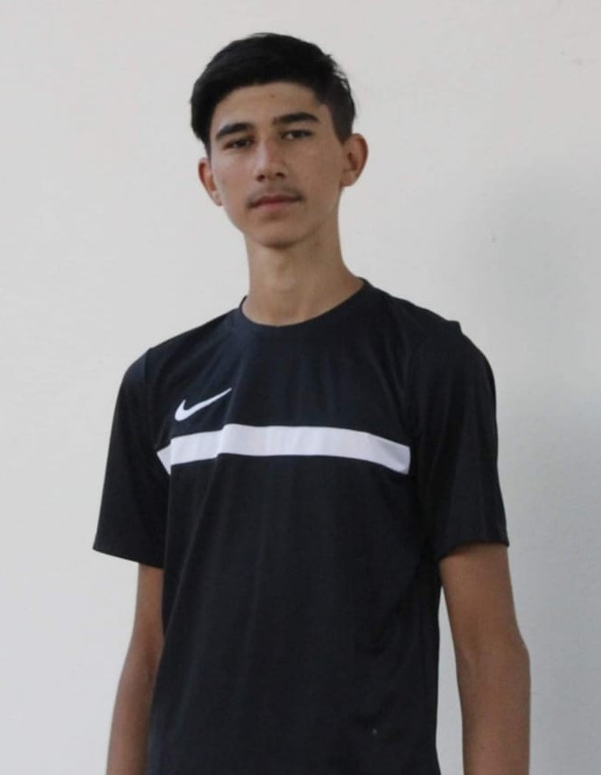

Student la ETTI

Numele meu este Munteanu Ciprian, sunt născut pe 7 octombrie a anului 2004 și locuiesc în comuna Românești din județul Botosani.În prezent sunt student în anul 3 la Facultatea de Electronica Telecomunicații și Tehnologia Informației.Am ales aceasta facultate dupa ce am absolvit liceul tehnologic "Octav Onicescu" din Botoșani și am reusit sa iau bacalaureatul cu media 9.51.Visul meu este de a ajunge inginer deoarece este o meserie respectabilă si interesantă.
Experiență
Educație
Familie